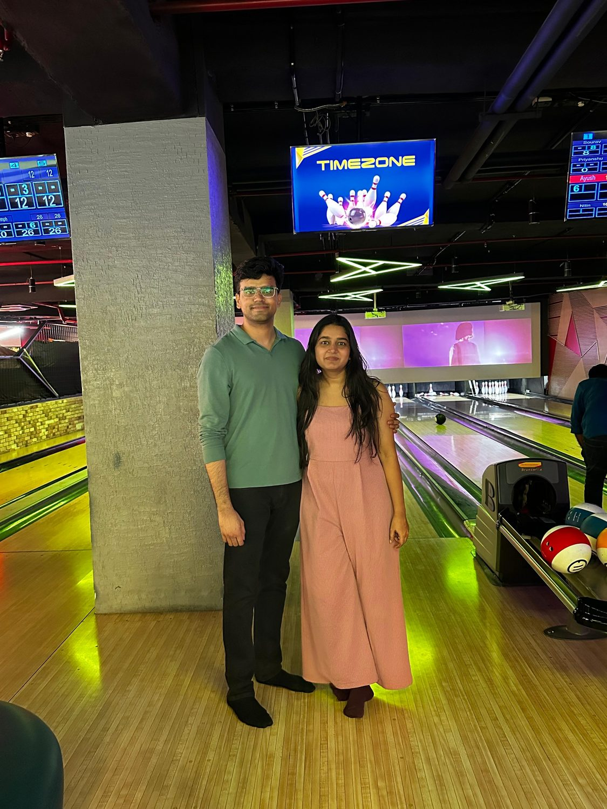
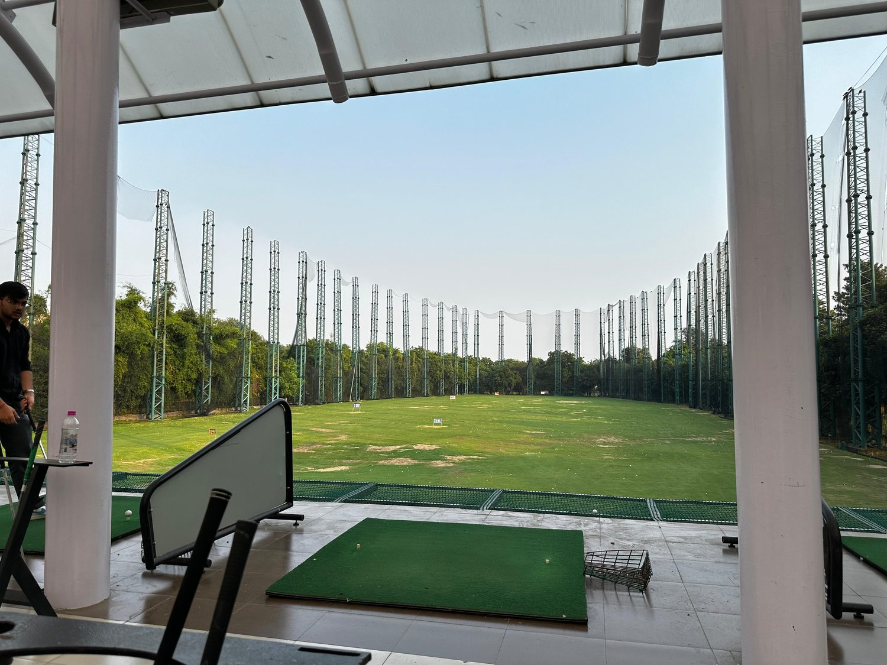
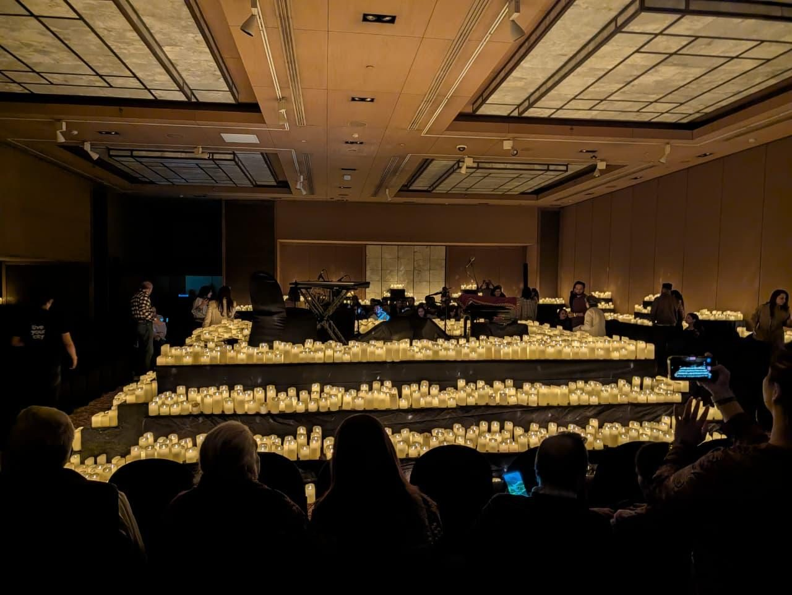
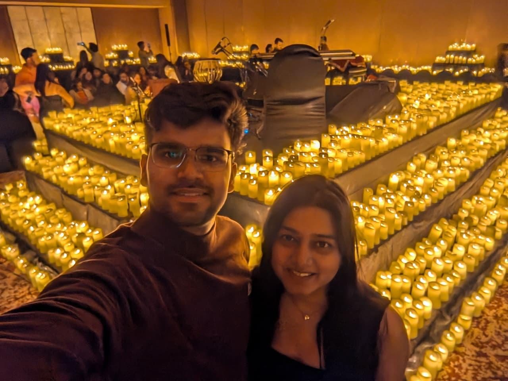
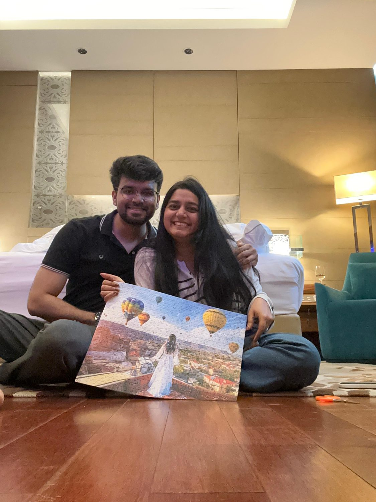
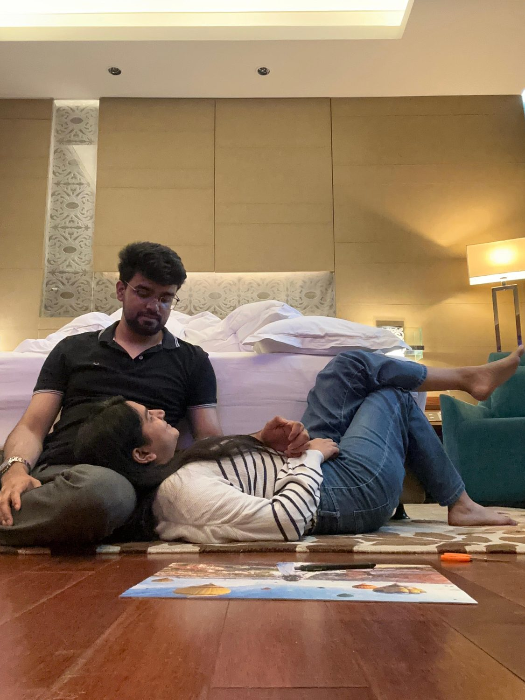
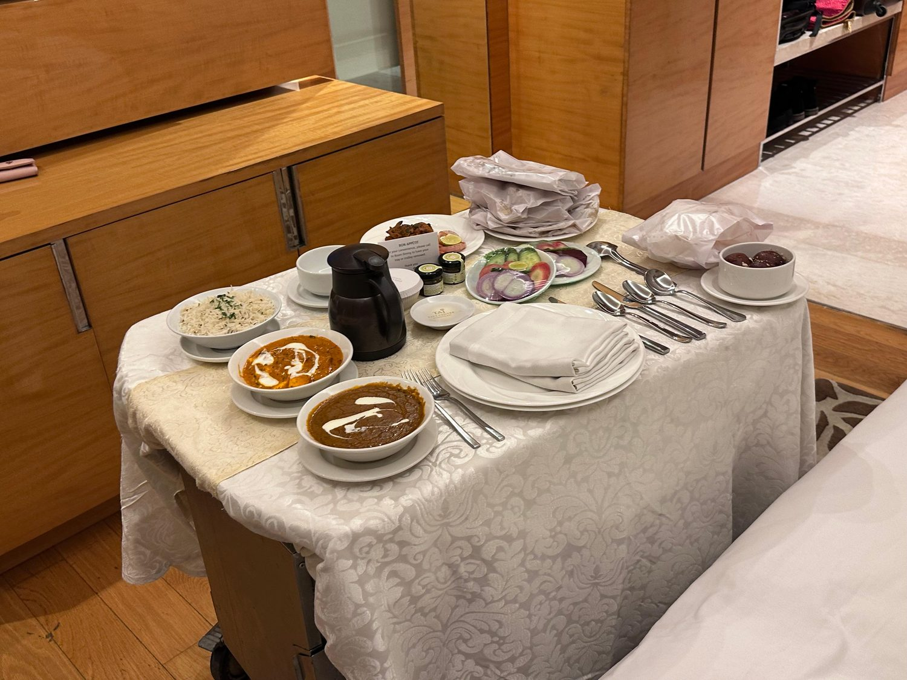
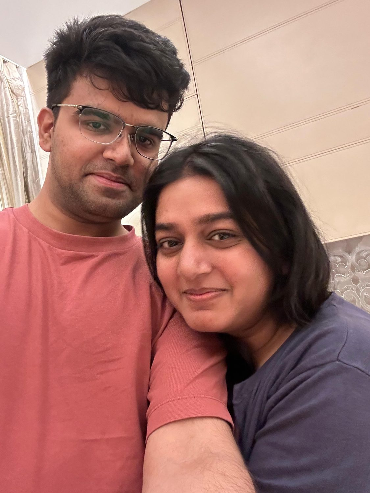
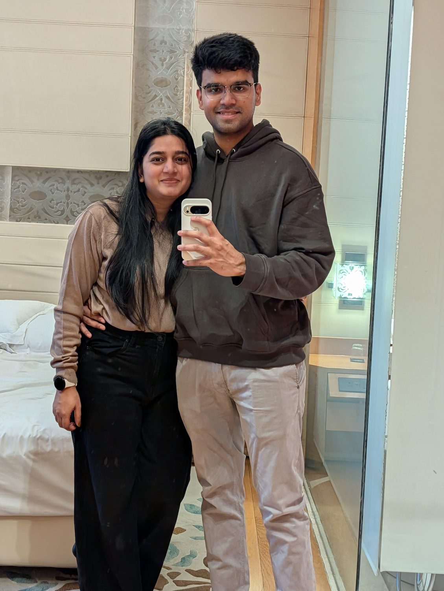
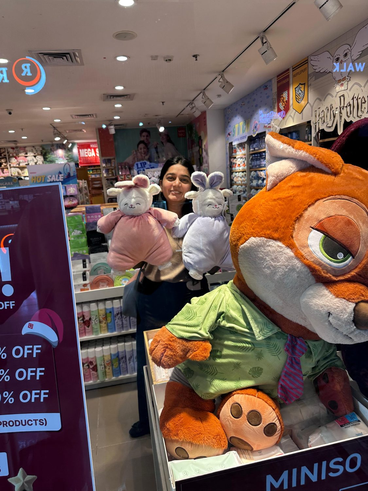

12 February 2025 · 12:27 am
You texted first
Hey Amey, Vidushi this sideYou, 12:27 am
Eight hours and eleven minutes later I sent back a restaurant on Google Maps and the line "this place is near to you." Subtlety was never the plan.
Good Morning Sunshine ☀️
14 September 2025 · —
Next time we're in the same room: in 5 weeks.
We started dating on 14 September 2025. But we started talking on 12 February 2025.
Between those two dates there are 214 days and 15,860 messages. Nearly a third of everything we have ever said to each other happened before we were anything at all.
in the order they happened
12 February 2025 · 12:27 am
Eight hours and eleven minutes later I sent back a restaurant on Google Maps and the line "this place is near to you." Subtlety was never the plan.
16 February 2025 · 1:27 pm
You were late. At ten that night we were both still texting from separate cars on the way home.

18 – 26 March 2025
The longest silence in our entire history, and it happened in the first six weeks. Eight days. No messages at all.
You ended it. In the 536 days since, we have never once gone more than three.
9 April 2025
I have now sent that sentence 330 times. I did not know on 9 April that it was going to become the thing.
28 May 2025
307 messages that day. Somewhere in there we stopped exchanging information and started actually telling each other things.

19 August 2025
You hadn't told anyone. You told me. Four days later I sent "so proud of you!!!" — which, I checked, is the only time that phrase appears anywhere in 38,819 messages. It was waiting for you.
14 September 2025
It started at 9:12 in the morning, exactly the way every day starts.
The next afternoon you said it had been a good day, and that it started with a lot of chocolate.
18 December 2025
Ten months in. Neither of us had said it once before that. It appears 122 times in all.


30 December 2025
You called it the best ending for 2025. What neither of us noticed is that this is the exact day our current streak begins. We have spoken every single day since. Today it stands at 259 days.



2 April 2026 · 7:20 am
A different phone, a different SIM, a thread with nothing in it. Here is the very first thing that went into it:
Nineteen months, two countries, two phone numbers, and it is still the same sentence.

Everything below is counted from our actual chat history, both phones, start to finish.
messages, plus 3,020 photos and stickers and 567 calls
of 578 days had at least one message. Only 24 were silent.
days in a row right now, unbroken since 30 December
good mornings, and 427 good nights
emoji. 😂 is number one for both of us, which says something.
times I have called you sunshine
words from me
87,495words from you
Nineteen months of talking and we landed within one percent of each other. Nobody was keeping score. Apparently we didn't need to.
Every message we have ever sent, sorted by the hour of the day it was sent in.
10 pm and 11 pm hold 14,228 messages between them. That is 37% of everything we have ever said to each other, inside a two-hour window, every day, for a year and a half. Whatever else was going on, we found each other at ten.
Words that one of us says constantly and the other has basically never typed.
I have started the day first 376 times. You have started it 178. I am not making a point. I am simply noting that one of us is awake earlier and it is not you.


While I was building this I realised how important you've become, and how much we've been through together.
Every moment with you has been magical. I'm so glad you've kept me in your happiness and in your struggles both, and that we've held each other up all year.
I still think about that day at the railway station. I'd come to see you off, and watching you go was the hardest thing I've done. I've been counting toward the next one ever since. Five weeks now.
There's a greeting I started sending in April, months before we were anything. I had no idea it would become the first thing I said to you every single day, through a new city, a new number, and 6,400 kilometres.
You are the best part of every day, including the ones where we're on opposite sides of the planet.
Happy one year, Vidu.
— Amey